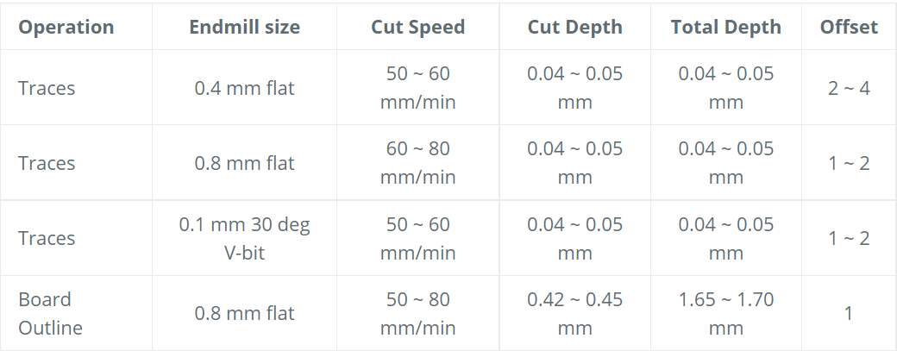
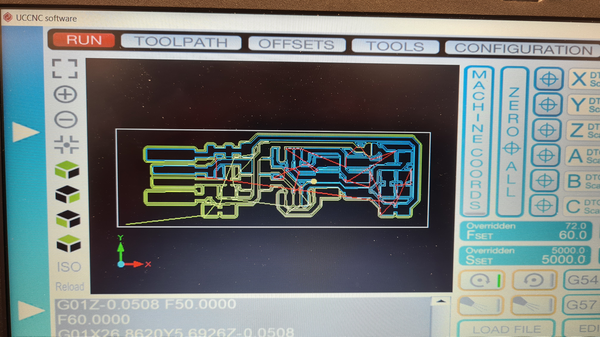
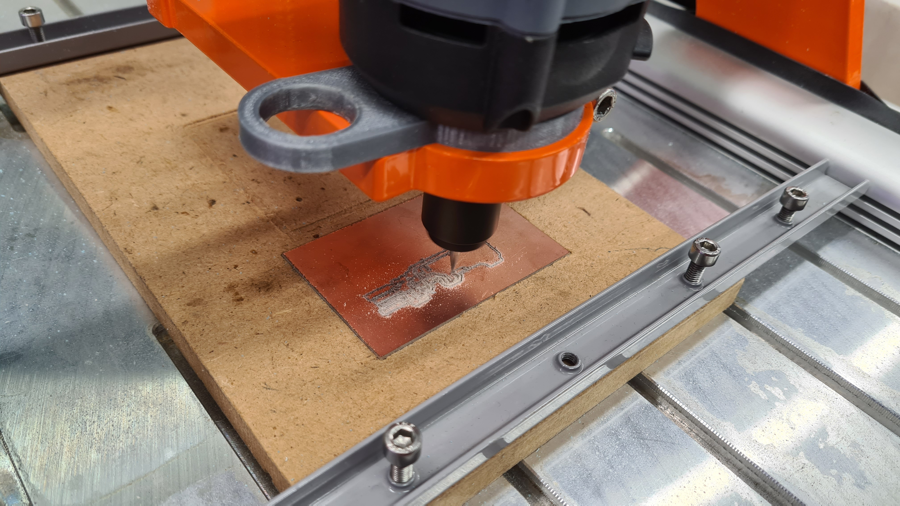
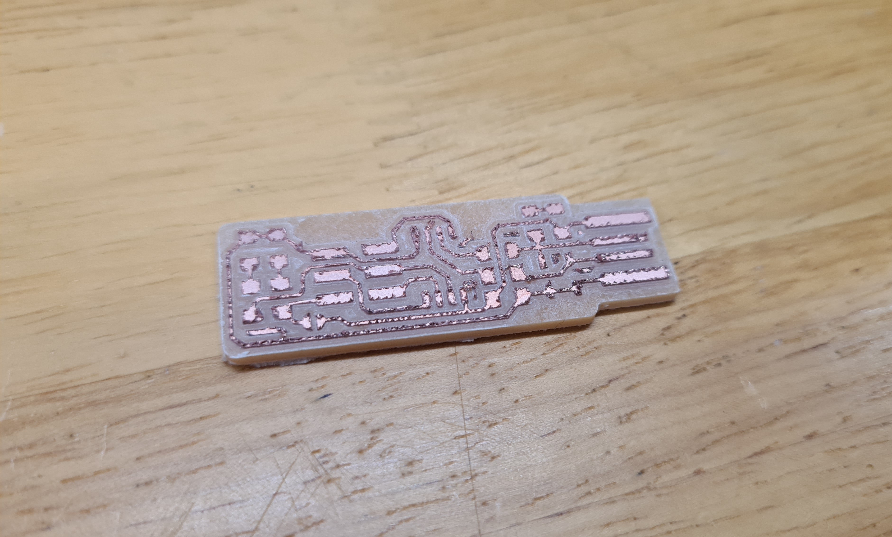
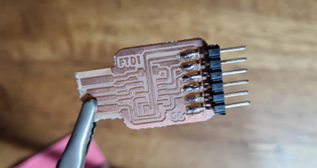
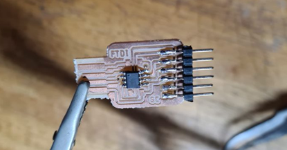
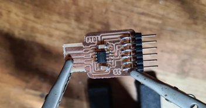
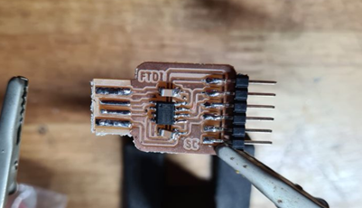
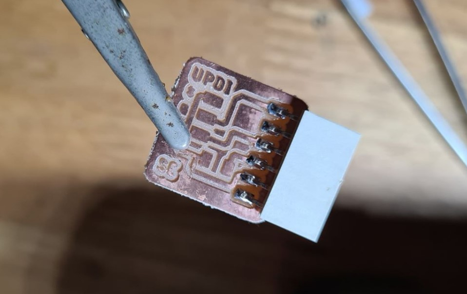
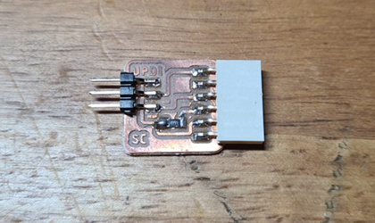

Electronics Production:
Printed Circuit Boards (PCB)
What is a PCB? A PCB mechanically supports and electrically connects electronic components using conductive tracks, pads and other features etched from one or more sheet layers of copper laminated onto and/or between sheet layers of a non-conductive substrate. (Source: allaboutcircuits website).
Why do we make it ourselfs? The reason we create our own PCBs is because we are able to customize the electronics to meet our product requirements and lower the overall footprint. It also allows us to learn more about what goes on in electronics production.
In-System Programmer(ISP)
What is an ISP? Also called in-circuit serial programming (ICSP), is the ability of some programmable logic devices, microcontrollers, and other embedded devices to be programmed while installed in a complete system, rather than requiring the chip to be programmed prior to installing it into the system. It allows firmware updates to be delivered to the on-chip memory of microcontrollers and related processors without requiring specialist programming circuitry on the circuit board, and simplifies design work.(Source: Wikipedia) This was the first PCB that we were taught to do.
Individual Assignment
For our assignment, we were assigned to mill an ISP board. I had to convert the 2 PNG images of the ISP board, mainly the outline and the traces, to Gcodes. To do this, I used mods to generate the codes.The finished PNGs:


Recommended Stepcraft settings:

Gcode Generation:
Stepcraft CNC:
Firstly, I uploaded the file into the stepcraft software. 
Next I calibrated the Z-axis and set the x and y axis. This is important to not waste any material. Moving on, I turn on the stepcraft machine and start the milling process. 
Here you can see the finish product. It just needs to be sanded with a fine grit sandpaper. However, this was where I learnt that the hello board that I was doing didnt need the isp. 
Instead what I needed was to make a FTDI and UPDI respectively. Fortunately, Mr Steven already had designs that we could use. Ill skip the milling part as ive already shown basically the same things above.
FTDI:
This was my first time soldering in a long time so I had to start slow. I started with the 6 pin connection before soldering the microprocessor.  
Next up was the capacitors which was a bit tricky. As you can see I didnt do them perfectly. One is crooked but ill take it. Lastly, I soldered the connection for the usd, which you can see was badly done. This was due to my solder which was gas powered which meant that it was much harder to use due to its weight and bulkyness which was why I went out to but an electric one.  
UPDI:
The UPDI was much more simple to solder. As you can see, its components are very little, however, i did still have a bit of trouble when soldering the resistor. I added to much soldering wire, causing a "blob" to form. To fix this, I just used a pen knife to carefully remove the excess material.  